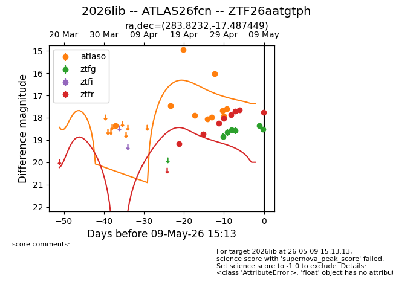
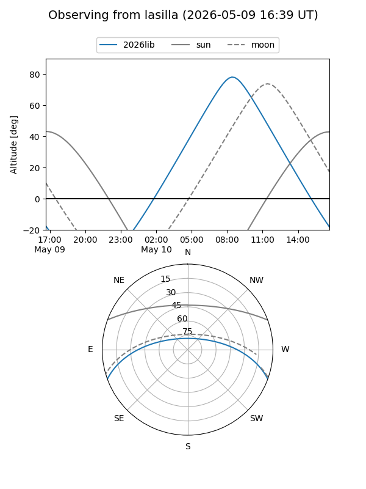
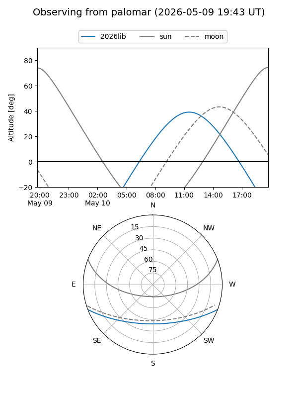
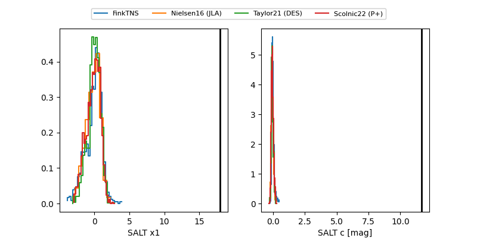

2026lib
Target 2026lib at 2026-05-09 15:14
Aliases and brokers:
FINK: link
Lasair: link
ALeRCE: link
TNS: link
YSE: link
alt names
ZTF26aatgtph (ztf,fink_ztf)
2026lib (tns,yse)
ATLAS26fcn (atlas)
Coordinates:
equatorial (ra, dec) = 283.8232,-17.48745
equatorial (HMS+DMS) = 18:55:17.56,-17:29:14.82
galactic (l, b) = (17.6747,-8.70218)
Flags:
Photometry:
last atlaso=17.59, ztfg=18.51, ztfr=17.75
10 atlaso, 6 ztfg, 8 ztfr detections
Lightcurve

Visibility


Additional plots
